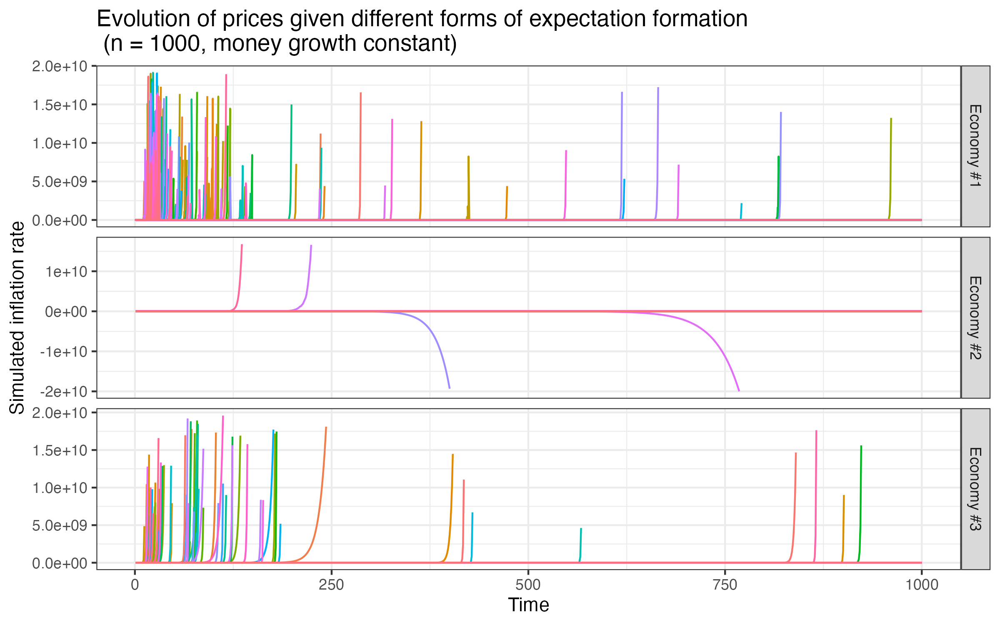

Research
Academic work
Trends in migration inflows and settlement in Spain, 1998 - 2021
While many studies on migrant concentration and economic well-being have been situated in countries with long histories as migrant destinations such as the United States, Canada, and Australia, research has increasingly focused on the Spanish context given the fact that it is now home to one of the largest immigrant populations in the world.1 According to the IOM’s World Migration Report, Spain was Europe’s sixth most popular migrant destination in 2019 with nearly 13% of its population being made up of foreign-born individuals (McAuliffe and Khadria 2020). Morocco, Romania, United Kingdom, and Colombia represent the top countries of origin as of the second quarter of 2021 (INE 2021).
Spain as net importer of migrants is a trend that picked up speed around the turn of the twentieth century as a response to the prolonged period of growth the Spanish economy was experiencing at the time. Unemployment rates decreased drastically from nearly 25% in 1994 to record-low of around 8% at the beginning of 2007. From the 10-year period between 1998 to 2007 alone, the proportion of foreign-born persons registered as living in Spain increased over five-fold, from 1.6% to 10% of the total population.

The research presented in my master’s thesis, Co-ethnic density and economic outcomes: A microeconometric analysis of how residential settlement patterns impact immigrant wages using the Spanish National Survey of Immigrants, which can be found here, examines the period of rapid influx of immigration in Spain from 1998 to 2021 and attempts to answer how initial settlement patterns, often determined with little understanding of local contexts and dictated by broader forces of the migratory network, can have an impact on the economic integration of recently arrived persons.
The impact of expectations of future inflation on inflation and monetary policy potency: A simulation of adaptive expectations in the Cagan model of inflation
With high inflation rates in the U.S. proving resilient throughout an extended period of interest rates hikes, faith in the Federal Reserve’s ability to control rising prices is beginning to waver. According to the quantity theory of money, as long as the velocity by which money is transacted remains constant, inflation, in principle, is just a monetary phenomenon that can therefore be controlled with monetary policy. What might be changing then for the economic superpower that is often used as the “golden standard” when comparing macroeconomic contexts? Moisés Naím, former Director of the Central Bank of Venezuela and Executive Director of the World Bank, believes that Biden might learn a few lessons from his neighbors to the south. He writes, “the Latin America experience has been that once inflation is rooted in the economy (in prices, contracts, wages, and people’s expectations), it is excruciatingly difficult to root out.”
For my master’s course in macroeconomics, I investigated the effect of inflationary expectations on money demand, simulating three different economies under Cagan’s model of inflation to understand how and to what extent rational updating of expectations might only exacerbate inflationary issues.

I conclude that past economic history plays an important role in shaping the collective understanding of what the “long-run” looks like. If the image of the long-run is stable or whether it is mired with memories of crisis, thus too will be the future. The U.S. has managed, the few times it has suffered inflation, to solve it. People remain relatively confident that the Fed will face and tackle the problem (even if this means suffering a recession). But as new experiences and news of inflation work their way into collective short-term memory, there is a fine line before it ingrains itself there for good and inflation becomes a way of life.
Professional work
Publications
Pharmacoepidemiology & Drug Safety (June
2019)
A simulation study of the
statistical power and signaling characteristics of an early season
sequential test for influenza vaccine safety.
The Journal of Infectious Diseases (November
2020)
Guillain-Barré
Syndrome After High-Dose Influenza Vaccine Administration in the United
States, 2018–2019 Season.
Work in progress
Apascaritei, P., Radl, J. & Swarr, M.
(2023).
Material
incentives drive gender differences in cognitive effort among
children.
Radl, J., Apascaratei, P., Foley, W., Kröger, L., Lorente,
P., Palacios-Abad, A., Solga, H., Stuhler, J., & Swarr, M.
(2024).
How
socioeconomic status shapes cognitive effort: A laboratory study among
fifth graders.
Presentations
“Effort and Social Equality” ECSR Thematic
Conference (June 2023)
Material
incentives drive gender differences in cognitive effort among
children.
Works cited
As measured by percentage of the resident population.↩︎